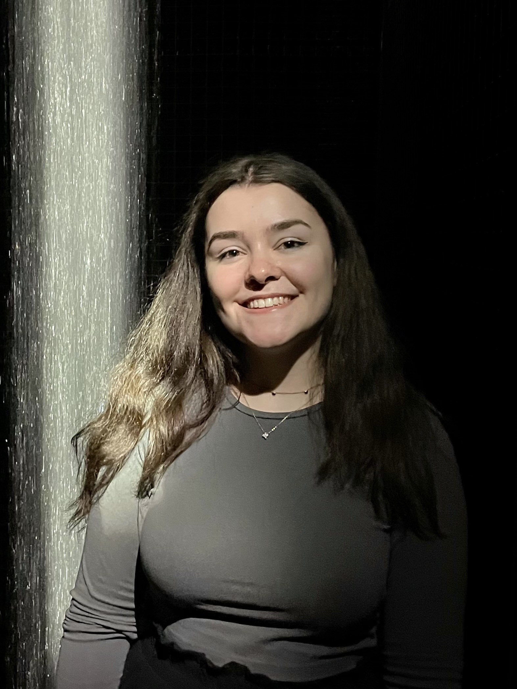

Hello there! Thanks for checking out my website. I hope you'll find what you're looking for, or discover something interesting along the way. If we haven't met yet, I'm Sonia, a PhD student at the Max Planck Institute for Software Systems as part of the CS@max planck program. How did I get here? The short answer is a long-standing curiosity about how science and technology can be used to solve meaningful problems.
The problems that I personally find most interesting explore the relationship between people and intelligent systems, particularly when it comes to language, communication, and their broader social impact. Through my work, I hope to contribute to designing these systems in ways that are more transparent, useful, and socially responsible.

News
- December 2025, I gave a talk at the Essence Education Forum titled "Empowering Software Teams with Essence: An LLM-Driven Approach to Supporting Practice Adoption".
- September 2025, I joined the CS@max planck program at the Max Planck Institute for Software Systems (MPI-SWS).
- March 2025, I was awarded a research scholarship and a tutoring position at the University of Bologna.
- December 2024, I graduated with honours from the Computer Science master's programme at the University of Bologna.
- April 2024, I joined the Micron 2024 Global Women Mentoring Program as a mentee.
- April 2024, I participated at the Follow the White Rabbit Aperitivo hosted by Bending Spoons at their HQ in Milan.
- Septmber 2023, I started my study abroad semester at National Taiwan University in Taipei.
- August 2023, I attended the Cornell, Maryland, Max Planck Pre-doctoral Research School 2023 in Saarbrücken, Germany.
- October 2022, I started writing articles for the Study Abroad Student Blog at Drexel University.
- September 2022, I started my study abroad semester at Drexel University in Philadelphia, USA.
- July 2022, I graduated with honours from the Computer Science for Management bachelor's programme at the University of Bologna.